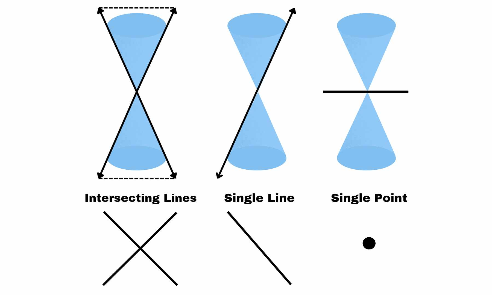

We introduce the conic sections (or conics), a particular type of curve that Frequently appear in nature and have applications in various fields. One A conic is one of the first shapes we learned, along with a circle. When throwing a ball, Its trajectory is a parabola. The orbit of each planet around the sun. This is an ellipse. Hyperbola properties were used in the design of several Telescopes and navigation systems.
It is circle when the plane is Horizontal.
It is ellipse when the tilted plane intersects only one cone to form a bound curve.
It is parabola when the plane intersects only one cone to form an unbounded curve.
There are various ways for a plane and the cones to connect, forming what Degenerate conics are defined as a point, one line, or two lines.
Radius - also known as the center(C), where from it's point to the other bounding surface of the sphere is equal, where r > 0.
This is the standard equation of the circle with center C(h, k) and radius r. If the center is the origin, then h = 0 and k = 0. The standard equation is then x² + y² = 0.
Ax² + Ay² + Cx + Dy + E = 0, A ≠ 0
or x² + y² + Cx + Dy + E = 0
Vertex - the sharpest turn point of the parabola (illustrated by V).
Focus - a point that determines or defines a parabola. (represented by F). The distance from the focus to the vertex is always specified by p.
Latus Rectum - a line that passes through the focus and is perpendicular to the symmetry axis, with two end points. 4p always determines the distance between the latus rectum endpoints.
Axis of Symmetry - a line that cuts the parabola in half.
Directrix - a perpendicular line to the symmetry axis (shown by D).
| VERTEX | EQUATION | OPENING |
|---|---|---|
| (0, 0) | x² = 4py | Upward |
| (0, 0) | x² = -4py | Downward |
| (0, 0) | y² = 4px | Right |
| (0, 0) | y² = -4px | Left |
| VERTEX | EQUATION | OPENING |
|---|---|---|
| (h, k) | (x-h)² = 4p(y-k) | Upward |
| (h, k) | (x-h)² = -4p(y-k) | Downward |
| (h, k) | (y-k)² = 4p(x-h) | Right |
| (h, k) | (y-k)² = -4p(x-h) | Left |
Center- the midpoint of the graph,where (h,k) found.
Vertex (V1&V2) - the two points on the principal axis, where the length of the two end points of vertex is called major axis.
Co-vertex (W1&W2)- few unit/s away from the center,where the length of the two endpoints of co-vertex is called minor axis.
Foci (F1&F2) - two points away from center at the x-axis.
| CENTER | EQUATION | GRAPH |
|---|---|---|
| (0, 0) | Horizontal | |
| (0, 0) | Vertical | |
| (h, k) | Horizontal | |
| (h, k) | Vertical |
Ax² + By² + Cx + Dy + F = 0 OR Ay² + Bx² + Cx + Dy + F = 0
Center - this can be at the origin or (h,k). This middle inner most part of a hyperbola.
Vertices (V1&V2) - Each vertex is a units from the center. Moreover, the transverse axis has length 2a.
Endpoints of conjugate axis (W1&W2) - Each endpoint of conjugate axis is b units from the center. Moreover, the length of conjugate axis is 2b.
Foci (F1&F2) - each focus is c units from the center and collinear to the vertices.
Asymtotes - These are the two lines that intersect at the center.
| PARTS | ||
|---|---|---|
| Vertices | (a, 0), (-a, 0) | (0, a), (0, -a) |
| Endpoints of Conjugate Axis | (0, b), (0, -b) | (b, 0), (-b, 0) |
| Foci | (c, 0), (-c, 0) | (0, c), (0, -c) |
| Equation of Asymptotes | y = ±(b/a) * x | y = ±(a/b) * x |
| Orientation | Horizontal | Vertical |
| PARTS | ||
|---|---|---|
| Vertices | (h ±a, k) | (h, k ±a) |
| Endpoints of Conjugate Axis | (h, k+b), (h, k-b) | (h+b, k), (h-b, k) |
| Foci | (h ±c, k) | (h, k ±c) |
| Equation of Asymptotes | y = k ±(b/a) (x-h) | y = k ±(a/b) (x-h) |
| Orientation | Horizontal | Vertical |